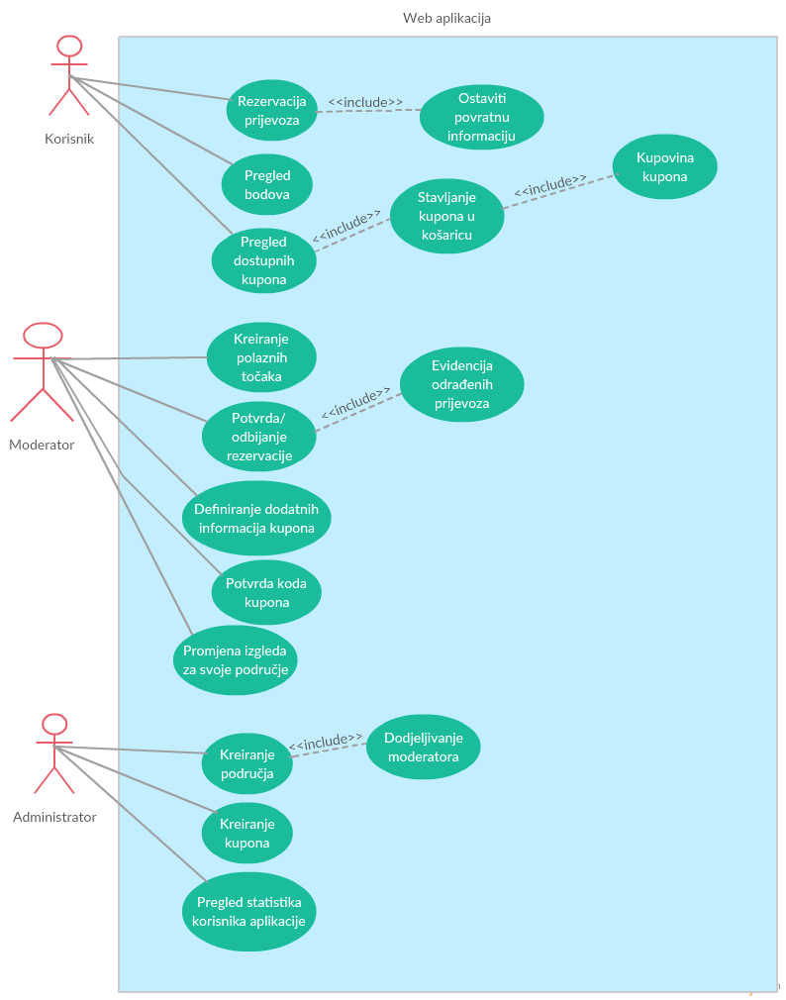
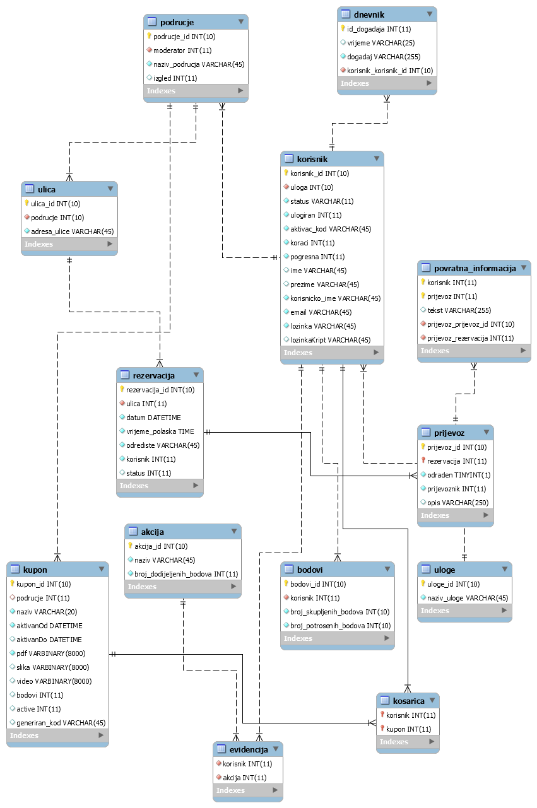
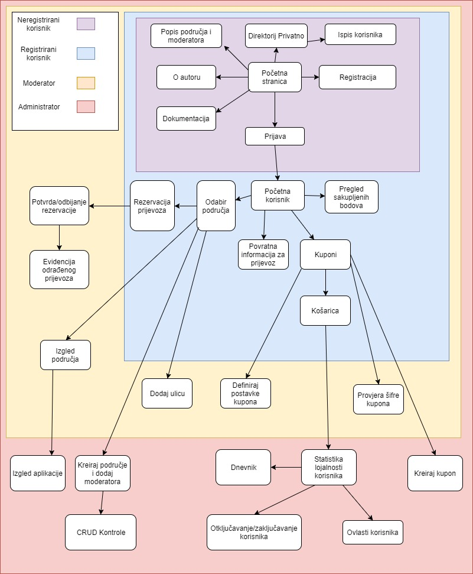

Tema ovog projektnog zadatka je bila napraviti web-aplikaciju koja omogućava korisnicima rezervaciju taxi prijevoza.
Uz rezervaciju, korisnici imaju mogućnost sakupljanja bodova kroz razne akcije unutar aplikacije te korištenje istih za kupovinu kupona za popust.
Ova aplikacija na kojoj se trenutno nalazite je programsko rješenje gore navedenog projektnog zadatka.
Ima mogućnosti svih modernih web-aplikacija kao što je registracija i prijava korisnika, a registrirani korisnici nakon prijave mogu rezervirati prijevoz i trošiti sakupljene bodove na kupovinu kupona.
Use Case dijagram

Shema baze podataka

Navigacijski dijagram

Ova se aplikacija sastoji od idućih php skripata:
index.php
Ujedno služi kao naslovnica, ali i za preusmjeravanje na određen dio aplikacije ovisno o ulozi korisnika te se koristi i za odjavu istog
podrucja.php
Korisnik može vidjeti sva područja i njihove moderatore
prijava.php
Skripta pomoću koje se korisnik prijavljuje u aplikaciju
registracija.php
Skripta za registraciju novih korisnika
aktivacija.php
Skripta za aktivaciju računa novog korisnika nakon pritiska na aktivacijski link
baza.class.php
Klasa za rad sa bazom podataka
sesija.class.php
Klasa za kreiranje i rad sa sesijama
zaboravljena_lozinka.php
Skripta koja generira novu lozinku korisniku ukoliko je zaboravio staru
evidencija_bodova.php
Korisnik može pratiti sakupljene i potrošene bodove unutar aplikacije
odabir_podrucja.php
Prije same rezervacije prijevoza, korisnik odabire područje i preusmjerava ga na daljnju rezervaciju
rezervacija.php
Skripta koja preuzima područje iz prethodne skripte te omogućava korisniku rezervaciju prijevoza
kuponi.php
Prikaz korisniku dostupnih kupona te mogućnost stavljanja istih u košaricu
kosarica.php
Mogućnost kupovine kupona unutar košarice ili izbacivanje kupona iz iste
povratna.php
Korisnik može poslati povratnu informaciju za svaki odrađen prijevoz
novo_podrucje.php
Administrator kreira novo područje i dodjeljuje mu moderatora
Ispis svih događaja koji su se dogodili unutar aplikacije
izgled_admin.php
Administrator može mijenjati izgled aplikacije za sebe
otkljucavanje_korisnika.php
Administrator ima mogućnost otključavanja računa korisnika koji čiji je račun bio zaključan zbog previše neuspješnih pokušaja prijave
definiranje_ulica.php
Moderator definira polazišne točke ili ulice za prijevoz
definiranje_kupona.php
Moderator definira cijenu i ostale podatke za novo kreiran kupon
prijevoz.php
Moderator označava prijevoz odrađenim ili neodrađenim
provjera_kupona.php
Provjeravanje generiranog koda kupona prilikom kupnje istog
rezervacije.php
Moderator može prihvatiti ili odbiti rezervaciju prijevoza
izgled.php
Moderator mijenja izgled aplikacije za svoje područje
korisnici.php
U direktoriju 'privatno' se pomoću ove skripte ispisuju svi korisnici aplikacije i njihove informacije
Mapa mjesta:
Naslovnica
->
Područja
Prijava
Registracija
O autoru
Dokumentacija
Korisnik
->
Rezervacija
Bodovi
Povratna informacija
Kuponi
Moderator
->
Definiranje kupona
Provjera kupona
Izgled stranice
Definiranje ulica
Rezervacije
Prijevoz
Administrator
->
Novo područje
Novi kupon
Statistika
Dnevnik
Izgled
Privatno
->
Korisnici
Korištene tehnologije:
HTML
HTML je kratica za HyperText Markup Language, što znači prezentacijski jezik za izradu web stranica
CSS
CSS je kratica od (eng.) Cascading Style Sheets. Radi se stilskom jeziku, koji se rabi za opis prezentacije dokumenta napisanog pomoću markup (HTML) jezika
PHP
PHP se ističe širokom podrškom raznih baza podataka i internet protokola kao i raspoloživosti brojnih programerskih knjižnica
JAVASCRIPT
JavaScript je skriptni programski jezik, koji se izvršava u web pregledniku na strani korisnika
MYSQL
MySQL je besplatan, open source sustav za upravljanje bazom podataka
MYSQL WORKBENCH
Softver za izradu modela baze podataka i sql skripata
Vanjski izvori:
W3Schools.com
Stackoverflow.com
Php.net
Opis završenosti projekta:
Projekt nije u potpunosti dovršen. Nisu implementirane CRUD kontrole za administratora nad svim tablicama u bazi podataka. Uz to, nije implementirano virtualno vrijeme.
Nije implementirano dijeljenje sadržaja na društvene mreže od strane korisnika te kod kupovine kupona, galerija slika kupona nije sortirana.
Uz to, nije korišten AJAX i nisu implementirane neke posebne osobine kao što je to Smarty, Angular, SEO, SQL zaštita...
Kod tabelarnog prikaza (dnevnik, statistika, itd.) korištene su datatables biblioteke, a ne vlastito rješenje...
Uočeni problemi:
Direktorij privatno je preko HTTPS-a dostupan odmah, a tek preko HTTP-a traži korisnika unos korisničkog imena i lozinke.
Košarica nije u potpunosti optimizirana za rad ukoliko korisnik odluči kupiti više kupona istovremeno, ali radi savršeno sa jednim te se preporuča kupnja jednog po jednog kupona.
Korisnik sakuplja bodove prilikom svake prijave u sustav te može konstantno se prijavljivati i odjavljivati te tako skupiti velike količine bodova.